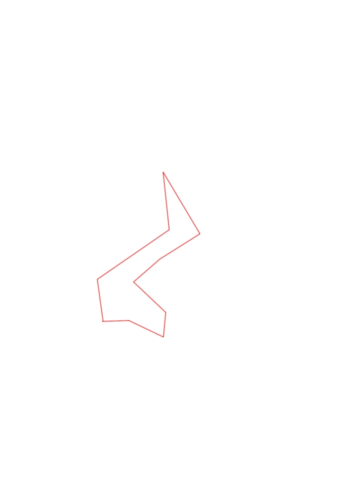
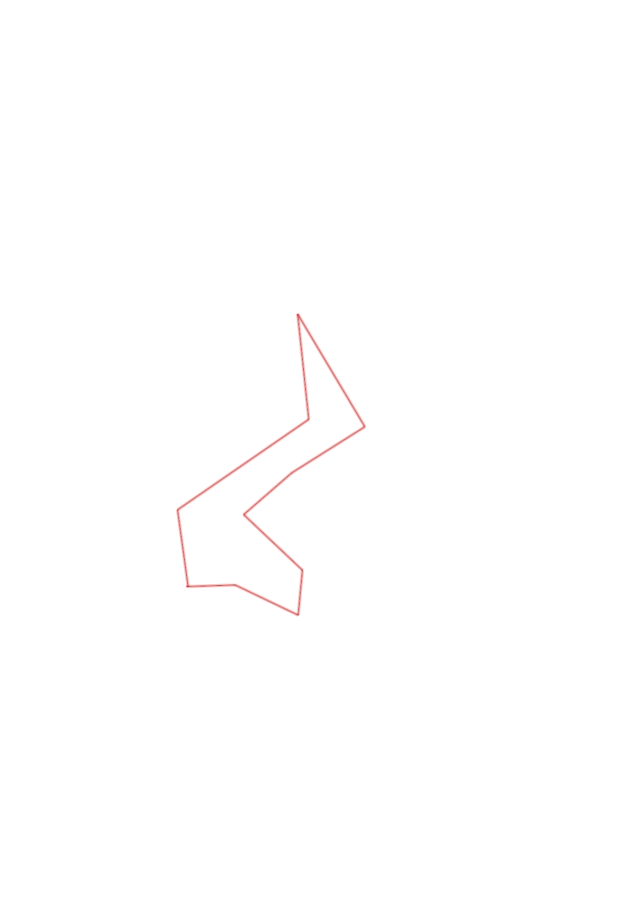

| Control |
Points |
Time Punched |
Distance |
Your Time |
Pace |
Place |
Fastest Time |
Median Time |
% Behind Fastest |
| 63 |
60 |
|
0.24 |
0:03:54 |
16:15 |
10 / 13 |
0:01:34 |
0:02:05 |
148% |
| 54 |
50 |
|
0.35 |
0:03:21 |
09:34 |
2 / 9 |
0:03:08 |
0:04:37 |
6% |
| 80 |
80 |
|
0.22 |
0:05:53 |
26:44 |
9 / 11 |
0:02:23 |
0:03:30 |
146% |
| 41 |
40 |
|
0.4 |
0:06:27 |
16:07 |
1 / 2 |
0:06:27 |
0:06:52 |
0% |
| 91 |
90 |
|
0.32 |
0:04:36 |
14:22 |
5 / 6 |
0:04:09 |
0:04:33 |
10% |
| 59 |
50 |
|
0.43 |
0:05:56 |
13:47 |
1 / 2 |
0:05:56 |
0:06:53 |
0% |
| 34 |
30 |
|
0.65 |
0:17:30 |
26:55 |
1 / 1 |
0:17:30 |
0:17:30 |
0% |
| 36 |
30 |
|
0.53 |
0:02:45 |
05:11 |
1 / 5 |
0:02:45 |
0:03:33 |
0% |
| 51 |
50 |
|
0.79 |
0:05:49 |
07:21 |
1 / 1 |
0:05:49 |
0:05:49 |
0% |
| Finish |
0 |
|
0.39 |
0:03:02 |
07:46 |
1 / 2 |
0:03:02 |
0:04:05 |
0% |
Total Distance Covered: 4.32km
Points Scored: 480
Late Penalty: 0
Final Score: 480
Total Time: 0hours 59minutes 13seconds
Efficiency: 111.11 points/km
 
